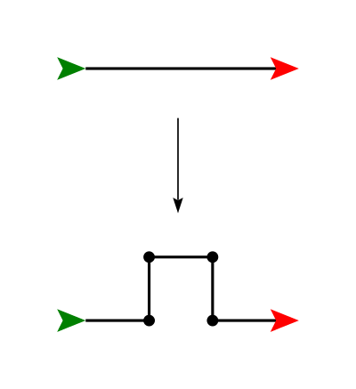

CSCI 150 - Lab 8
Fractal Recursion
Overview
Certain elements of mathematics can be naturally described by recursion, as we saw with the
factorial function. Today, we will look
into the mathematics of fractals and how some of their properties can be described with recursion.
Materials
Description
We will be using the Turtle module in python for our fractals today, like
Sierpinski's Triangle,
Koch Snowflake, and the
Dragon Curve.
To access the Turtle module
and define a turtle, we use the following lines of code:
import turtle
t = turtle.Turtle()
With our turtle t, we can make this turtle navigate around the screen, similar to our
programming with Scratch.
Some commands for the turtle are:
- movement around the screen:
t.forward(n), t.back(n) will move the
turtle n pixels in the current direction, t.goto(x, y) will go to a
particular location on the screen.
- changing direction:
t.right(d), t.left(d) will turn the turtle left or right
by d degrees.
- draw a dot on the screen of a certain size:
t.dot(size)
- put the pen down or pick the pen up:
t.penup(),
t.pendown()
- change the turtle's speed:
t.speed(s), where 1 =
slowest and 10 = fastest
Step 1
XXX rewrite this section
The first type of fractal we will examine uses a simple rewrite rule.
The idea is to replace a straight line segment with four smaller line
segments, each 1/3 the length of the original, as depicted below.

Now we can repeat, at each level, replacing these four new lines in the
same manner. Write a recursive function in a file
called fractal.py to have the turtle draw this
replacement, with the base case being to draw a line, and the
recursive case being to draw these four lines at 1/3 the original
distance.
Step 2
Try your recursive coding skills out with a new replacement curve shown here.
ADD DOTS TO THESE IMAGES, SHOW START AND END POINT AND ANGLE OF THE TURTLE
Koch 2

Step 3
Create functions for the following transformations:
Koch 3

C-curve

Step 4
These next two are a little different. They each require two functions for
replacement instead of just one above.
Dragon Curve

Sierpinski's Triangle

Step 5
Create your own replacement rule for your personal
fractal, and write code to draw this new fractal.
What to Hand In
Log in to Moodle and handin your code. Make sure
you have followed the Python Style Guide, and
have run your project through the Automated Style Checker.
You must hand in:
Grading
- To earn a D on this lab, complete Step 1.
- To earn a C on this lab, do the above and complete Step 2.
- To earn a B on this lab, do the above and complete Step 3.
- To earn a A on this lab, do the above and complete Step 4.
- To earn a 100 on this lab, do the above and complete Step 5.
© Mark Goadrich & Brent Yorgey, Hendrix College
{kind=link}
{kind=link}
{kind=link}
.svg){kind=link}
{kind=link}